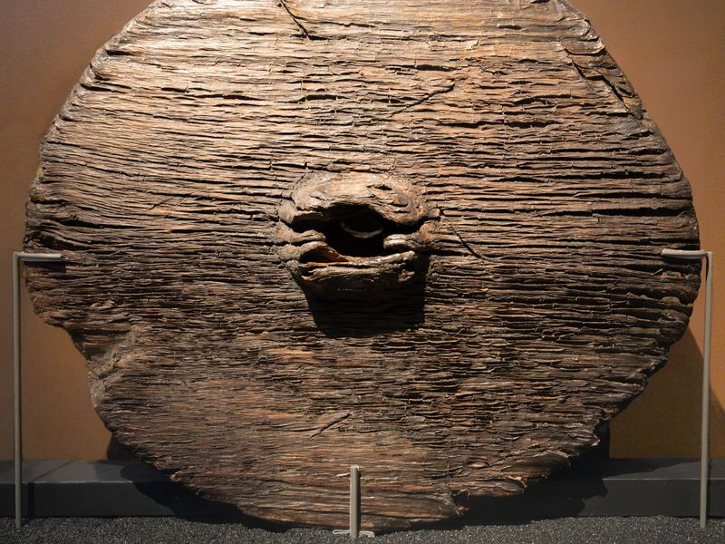
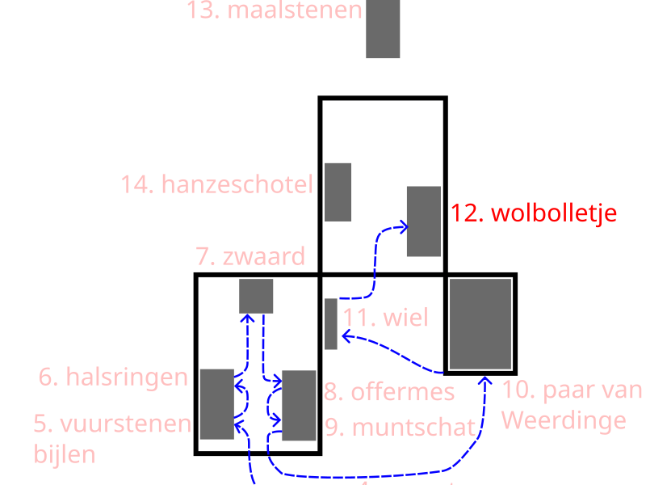

11. Het houten schijfwiel van Steenwijk ca 2280-2130 v Chr


Het houten wiel dat bij Steenwijk is gevonden, dateert uit de periode ongeveer 2800 tot 2130 voor Christus. Het is een van de oudste bekende wielen in deze regio.
In die tijd was een wiel een bijzonder en kostbaar voorwerp. Het hoorde bij een kar waarmee mensen zware lasten konden vervoeren. Het maken ervan kostte veel tijd en vakmanschap.
Juist daarom denken onderzoekers dat dit wiel niet zomaar is weggegooid. Het is compleet gevonden en niet duidelijk versleten. Dat wijst erop dat het met opzet is achtergelaten.
De vindplaats, een ven, is daarbij belangrijk. Zulke natte plekken werden in de prehistorie vaak gezien als bijzondere of heilige plaatsen. Mensen dachten dat je daar dichter bij andere werelden kon komen.
Door iets waardevols op zo’n plek achter te laten, gaven mensen het niet zomaar op. Het kon een offer zijn, bijvoorbeeld om hulp te vragen of dank te tonen.
We weten de precieze reden niet, omdat er uit deze tijd geen geschreven bronnen zijn. Maar het idee van een bewuste, betekenisvolle handeling wordt door onderzoekers als het meest waarschijnlijk gezien.
Zo laat dit wiel zien hoe belangrijk zelfs alledaagse voorwerpen konden zijn in het leven van mensen in de prehistorie.
Het volgende luisterpunt is het Bolletje wol van Roswinkel.